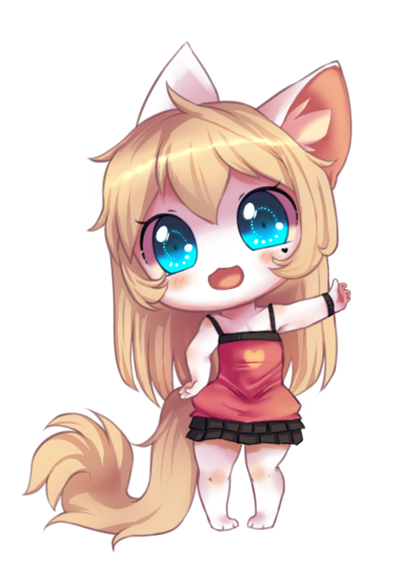
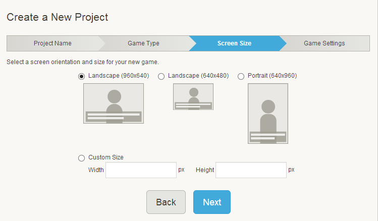

 Robby Muhammad NstPada IDE Processing, mendukung beberapa
Robby Muhammad NstPada IDE Processing, mendukung beberapa
- Java
- Javascript [p5js]
- Python
- Java android programming
P5js sendiri memiliki banyak libraries yang sangat berguna diantaranya :
- P5 DOM {Untuk berinteraksi dengan HTML5}
- P5 Sound
- P5 Serial {Memungkinkan menciptakan hubungan serial dengan perangkat}
- P5 Collide 2D {Calculating Collision Detecting pada 2D Geometry}
- Masih banyak lagi, termasuk Dimension vector pada p5js
- Info lebih lengkap dapat dilihat pada P5JS Libraries
 Maroon 5 - Payphone
Maroon 5 - PayphoneMarshmello - Alone
Marshmello - Colour
 The Chainsmokers
The Chainsmokers Created by: Robby Muhammad Nst
Terrain Sample
Pada program ini menggunakan :
Robby Muhammad Nst
Pada program ini menggunakan :
- Vertex drawing
- Perlin noise
- BeginShape without paramater
Robby Muhammad Nst
How to make Visual Novel
Using TyranoBuilder
Apa itu Visual Novel ??

- Apa saja yang dibutuhkan di dalam Visual Novel ??
- 1. Story ( Cerita )
- 2. Gambar BackGround
- 3. Character
- 4. Music


TyranoBuilder

Filtur" yang terdapat di dalam

Bagaimana gambaran dalam sebuah Visual Novel ??

- Membuat sebuah "Visual Novel" di awali dengan :
- 1. Menentukan Cerita apa yang mau di pakai
- 2. Menentukan Karakter masing"
- 3. Di iringi dengan Musik yang bagus
- 4. Selebihnya sesuai dengan Imajinasi anda
Startup Projek
Tipe Novel
Scaling
Optional Settings
Additional Options
Good Luck Creating!
Facts And places Of Interest In The World
INDONESIA
Facts And places Of Interest In The World
INDONESIA
LAKE TOBA- Danau Toba adalah salah satu Danau yang terkenal di Indonesia (Sumatera).
- Yang membuat danau ini menakjubkan adalah di tengah-tengah hamparan air danau yang jernih terdapat sebuah pulau dengan luas yang hampir sama dengan luas Singapura.
- Pulau tersebut bernama Pulau Samosir.Di tengah Pulau Samosir ini ternyata masih terdapat dua buah danau indah, yaitu Danau Sidihoni dan Danau Aek Natonang.
- Danau Toba dinobatkan sebagai danau terluas di Asia Tenggara, dan merupakan danau terbesar kedua setelah Danau Victoria di Afrika.
INDONESIA
KOMODO ISLAND- Jika Anda ingin menikmati the real habitat dari hewan khas Indonesia, di sinilah lokasi yang tepat.
- Pulau Komodo sendiri terdiri dari beberapa pulau dan perairan laut.
- Salah satu yang terkenal adalah Taman Nasional Loh Liang yang terletak di Pulau Rinca, Manggarai Barat, Labuan Bajo, Flores.
- Di sini Anda bisa melihat dari dekat bagaimana kehidupan Komodo sesungguhnya.
- Pulau Komodo juga masuk sebagai Situs Warisan Dunia UNESCO.
INDONESIA
DIRGANTARA STATUE- Pembuatan Patung Dirgantara atau sekarang dikenal dengan Patung Pancoran sempat dihentikan karena peristiwa Gerakan 30 September/PKI.
- Yang pada waktu itu membuat posisi dari Bung Karno sebagai Presiden Indonesia sedang berada diujung tanduk.
- Agar Patung tersebut bisa diselesaikan, ternyata Bung Karno harus rela mengeluarkan dananya sendiri dengan menjual salah satu mobil pribadinya dan menyerahkan dana sebesar Rp 1,7 Juta kepada Edhi Sunarso, sang pemahat.
SINGAPORE
Facts And places Of Interest In The World
SINGAPORE
MARINA BAY SANDS- Marina Bay Sands adalah seb0uah pusat hiburan dan resort terpadu yang dibuka sejak tahun 2010.
- Penampilan visual bangunan Marina Bay Sands sangatlah unik dan tiada duanya di dunia dengan 3 gedung utama yang dihubungkan dengan bangunan berbentuk kapal di atasnya.
- Marina Bay Sands memiliki ribuan kamar hotel, kasino, teater, ruang kesenian, restoran, klub malam, taman, hingga mall mewah dan lain-lain, semuanya dalam satu lokasi.
- Selain itu di bangunan berbentuk perahu yang ada di atas gedung, terdapat kolam renang yang merupakan kolam renang terpanjang di dunia dengan panjang sekitar 150 meter, dan berada di ketinggian 200 meter.
SINGAPORE
SENTOSA ISLAND- Sentosa Island adalah sebuah tempat wisata di Singapura yang lengkap, namun tidak menyatu dengan pulau utama Singapura, melainkan berada di pulau yang terpisah.
- Banyak cara untuk mencapai Sentosa Island, yang paling menarik adalah dengan menggunakan kereta gantung karena anda juga dapat menikmati pemandangan kota Singapura dari ketinggian.
- Apabila anda ingin berhemat, ada cara lain untuk mencapai Sentosa Island yaitu dengan berjalan kaki, menaiki monorail Sentosa Express, dan menggunakan bus.
- Yang bisa anda temukan di Sentosa Island adalah pantai, hotel, spa, restoran, tempat belanja, tempat bermain golf,dll.
SINGAPORE
MERLION PARK- Merlion adalah sebuah patung dengan kepala singa dan berbadan ikan yang sudah menjadi maskot Singapura. Nama Merlion merupakan gabungan dari mermaid dan lion atau dalam bahasa Indonesia adalah ikan duyung dan singa.
- Taman Merlion Park buka 24 jam setiap hari dan tidak dipungut biaya bagi siapapun yang ingin berkunjung, sehingga anda dapat menghemat biaya perjalanan anda. Selain berfoto-foto anda juga dapat menikmati sungai di lokasi ini karena Merlion Park terletak di depan Singapore River.
RUSIA
Facts And places Of Interest In The World
RUSIA
BAIKAL LAKE- Apa dan Dimana, sebuah danau tertua dan terdalam yang ada di dunia?? predikat tersebut di sandang oleh danau yang terletak di sekitar jalur trans-siberia.
- Sebutan lain untuk danau baikal adalah "Mutiara Siberia" tentu karena keindahan serta kejernihan dari danau tersebut.konon sekitar 15-20 persen air terjenih yang ada di dunia terletak di danau ini.
- Di danau baikal juga menyediakan beberapa resort yang mendukung kita untuk dapat menikmati serta bercengkerama secara langsung dengan flora dan fauna di sekitar danau baikal yang masih asri terjaga dengan baik.
RUSIA
THE BIGGEST MCDONALD- Jika anda penggemar makanan cepat saji, Rusia adalah tempat terbaik untuk anda. Negara ini adalah rumah bagi restoran McDonalds terbesar di dunia. Dengan hampir memiliki 700 kursi.
- Pada tahun 2012 lalu saat Olimpiade di London rekor tersebut terpecahkan, karena dibangunnya Mc Donalds dengan tempat duduk sebanyak 1500 buah, namun setelah Olimpiade usai tempat tersebut ditutup.
RUSIA
KREMLIN MOSCOW- Di Moscow, Kremlin merupakan karya arsitektural wisata yang andalan. meliputi gedung-gedung perkantoran pemerintahan, katedral-katedral serta Diamond Fund Exibition.
- Tahukah anda salah satu koleksinya adalah berlian dengan 190 karat milik Katherine yang di Agungkan.
ABU DHABI
Facts And places Of Interest In The World
ABU DHABI
FERRARI WORLD- Ferrari World adalah sebuah taman hiburan bertema Ferrari yang berada di Yas Island di Abu Dhabi.
- Ini adalah taman hiburan indoor di Abu Dhabi yang memiliki luas 200.000 meter persegi dan merupakan taman hiburan dengan konsep indoor terbesar yang ada di dunia.
ABU DHABI
EMIRATES PALACE HOTEL- Emirates Palace Hotel adalah tempat yang tepat untuk Traveller melakukan wisata kuliner.
- Tempat ini menyediakan berbagai pilihan bersantap internasional. Salah satunya adalah Mezzaluna, disini Traveller dapat mencicipi masakan khas Mediterania sambil menikmati pemandangan marina yang sangat mempesona.
ABU DHABI
BURJ KHALIFA- Burj Khalifa adalah atraksi wisata di UEA. Bangunan luar biasa ini terletak di Dubai dan merupakan salah satu pencakar langit tertinggi di dunia.
- Perkiraan ketinggian adalah 820 meter. Burj Dubai kini telah menjadi hunian rumah berjumlah 300 buah, sembilan hotel dan kantor. Bangunan ini memiliki lebih dari 160 lantai.
THAILAND
Facts And places Of Interest In The World
THAILAND
MADAME TUSSAUDS MUSEUM- Museum Lilin Madame Tussauds sebenarnya tidak hanya ada di Bangkok, melainkan ada di berbagai tempat di dunia.
- Museum Lilin Madame Tussauds mempunyai koleksi patung lilin yang beraneka ragam dengan tingkat kemiripan yang menyerupai manusia asli.
THAILAND
SIAM OCEAN WORLD- Siam Ocean World merupakan salah satu tempat wisata di Bangkok yang paling favorit.
- Siam Ocean World adalah sebuah akuarium sejenis sea world di Indonesia, namun Siam Ocean World merupakan akuarium yang paling besar di Asia Tenggara dengan lebih dari 30,000 jenis hewan laut.
- Selain berbagai jenis akuarium dengan tema yang berbeda-beda, di Siam Ocean World juga terdapat tempat bermain anak-anak sehingga tempat ini sangatlah cocok untuk wisata keluarga di Bangkok.
- Setiap 30 menit, terdapat acara buatan pihak Siam Ocean World, misalnya memberi makan ikan hiu, memberi makan pinguin, dan lain-lain.
THAILAND
WATER WAR FESTIVAL- Ada Festival Songkran, yang dirayakan dengan pesta dan perang air. Saat festival ini, penduduk kota akan saling menyiramkan air di sepanjang jalan. Songkran merupakan festival terpopuler di Thailand, yang menandai permulaan tahun matahari dan musim panas di negara ini.
- Secara tradisional, masyarakat Thailand merayakan Songkran dengan mengunjungi kuil dan menyiramkan air ke satu sama lain sebagai permohonan keberuntungan untuk tahun yang baru. Festival unik lainnya adalah Monkey Buffet Festival, sebuah event tahunan yang diadakan di Lopburi, Thailand, untuk mempromosikan pariwisata.
JAPAN
Facts And places Of Interest In The World
JAPAN
TOKYO DISNEYLAND- Tak berbeda dengan konsep Disneyland di beberapa negara lain, Tokyo Disneyland juga menyajikan sebuah taman rekreasi berkonsep Disney.
- Di sini, Anda bisa menyaksikan berbagai wahana permainan dengan tema film-film yang diproduksi Walt Disney. Tempat wisata ini merupakan Disneyland pertama yang dibangun di luar Amerika Serikat dan resmi dibuka pada tahun 1983.
- Tokyo Disneyland dibagi menjadi tujuh area utama yaitu World Bazaar, Tomorrowland, Toontown, Adventureland, Westernland, Critter Country dan Fantasyland. Masing-masing zona ini memiliki ciri khas sendiri.
JAPAN
GOLDEN PAVILION- Golden Pavilion adalah salah satu kuil Buddha paling populer di Jepang.
- Sebelumnya, kuil ini adalah tempat peristirahatan Ashikaga Yoshimitsu setelah masa pensiunnya. Tempat wisata ini juga dikenal dengan nama Kinkakuji dan Rokuonji.
- Namun sekarang ini kuil menjadi tempat wisata yang dikunjungi banyak wisatawan domestik dan asing setiap harinya.Ciri dari Golden Pavilion adalah atapnya yang berwarna emas.
- Selain dapat melihat arsitektur kuno Jepang yang khas, Anda juga bisa menikmati teh panas di Tea Garden yang berada di kawasan wisata ini. di sini juga terdapat toko souvenir khas Golden Pavilion.
JAPAN
OKINAWA CHURAUMI AQUARIUM- Okinawa Churaumi Aquarium disebut-sebut sebagai akuarium terbaik di Jepang. Daya tarik utama di sini adalah Kuroshio Tank, sebuah akuarium raksasa di mana pengunjung bisa menyaksikan kehidupan laut melalui terowongan yang tersedia.
- Selain akuarium raksasa, di sini juga terdapat kolam outdoor yang kerap menghadirklan pertunjukan binatang laut seperti lumba-lumba dan singa laut.